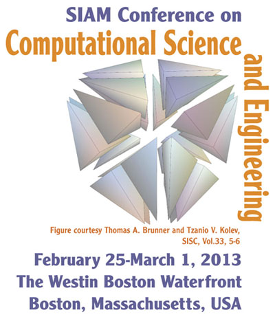

Frontiers in Large-Scale Graph Analysis (SIAM CSE13 Minisymposium)
The Westin Boston Waterfront
Boston, MA
25 February - 1 March 2013
Scope and Goals:
Graph analysis provides tools for analyzing the irregular data sets common in health informatics, computational biology, sociology, security, finance, and many other fields. These graphs possess different structures than typical finite element meshes. Scaling graph analysis to the scales of data being gathered and created has spawned many directions of exciting new research. This minisymposium starts where applications map onto graph problems, continues through advanced analysis algorithms, and finishes surveying state-of-the-art software frameworks. We wrap up with a summary and open discussion of application needs, research directions, and software requirements.
Location:
This workshop is co-located with SIAM CSE13, held 25 February - 1 March 2013, at the Westin Boston Waterfront in Boston, MA. Registration information for CSE13 can be found at here.
Program:
Wednesday, February 27
2:00 PM - 4:00 PM
Room: Commonwealth Ballroom B
- 2:00-2:25 Applications and Challenges in Large-scale Graph Analysis
- David A. Bader, Georgia Institute of Technology, USA; Henning Meyerhenke, Karlsruhe Institute of Technology, Germany; Jason Riedy, Georgia Institute of Technology, USA
- Emerging real-world graph problems include detecting community structure in large social networks, improving the resilience of the electric power grid, and detecting and preventing disease in human populations. We discuss the opportunities and challenges in massive data-intensive computing for applications in social network analysis, genomics, and security. The explosion of real-world graph data poses substantial challenges for software, hardware, algorithms, and application experts.
- 2:30 - 2:55 Large Scale Graph Analytics and Randomized Algorithms for Applications in Cybersecurity
- John R. Johnson, Emilie Hogan, and Mahantesh Halappanavar, Pacific Northwest National Laboratory, USA
-
- 3:00 - 3:25 Anomaly Detection in Very Large Graphs: Modeling and Computational Considerations
- Benjamin Miller, Nicholas Arcolano, Edward Rutledge, Matthew Schmidt, and Nadya Bliss, Massachusetts Institute of Technology, USA
- Graph theory provides an intuitive mathematical foundation for dealing with relational data, but there are numerous computational challenges in the detection of interesting behavior within small subsets of vertices, especially as the graphs grow larger and the behavior becomes more subtle. This presentation discusses computational considerations of a residuals-based subgraph detection framework, including the implications on inference with recent statistical models. We also present scaling properties, demonstrating analysis of a billion-vertex graph using commodity hardware.
- 3:30 - 3:55 Combinatorial and Numerical Algorithms for Network Analysis
- Henning Meyerhenke and Christian Staudt, Karlsruhe Institute of Technology, Germany
- We report on our recent efforts in developing combinatorial and numerical algorithms for network analysis. Algorithms under consideration include community detection and seed set expansion, algebraic distances and lean algebraic multigrid. The development is driven by the rationale of combining ease-of-use and high performance.
9:30 AM - 11:30 AM
Room: Commonwealth Ballroom B
- 9:30-9:55 Are We There Yet? When to Stop a Markov Chain while Generating Random Graphs?
- Ali Pinar, Jaideep Ray, and C. Seshadhri, Sandia National Laboratories, USA
- Markov chains are commonly used to generate random networks through rewiring of its edges. However, provable bounds on the number of iterations required for an independent instance are impractical. Practitioners end up using ad hoc bounds for experiments. In this work, we will present our methods for computing practical bounds on the number of iterations, and present experimental results for generating graphs with a given degree distributions and joint degree distribution.
- 10:00 - 10:25 Analyzing Graph Structure in Streaming Data with STINGER
- Robert C. McColl, David Ediger, David A. Bader, and Jason Riedy, Georgia Institute of Technology, USA
- Analyzing static snapshots of massive, graph-structured data cannot keep pace with the growth of social networks, financial transactions, and other valuable data sources. Our software framework, STING (Spatio-Temporal Interaction Networks and Graphs), uses a scalable, high-performance graph data structure to enable these applications. STING supports fast insertions, deletions, and updates on graphs with semantic information and skewed degree distributions. STING achieves large speed-ups over parallel, static recomputation on both common multicore and specialized multithreaded platforms.
- 10:30 - 10:55 High-Performance Filtered Queries in Attributed Semantic Graphs
- John R. Gilbert, University of California, Santa Barbara, USA; Aydin Buluc, Leonid Oliker, and Samuel Williams, Lawrence Berkeley National Laboratory, USA; Armando Fox, University of California, Berkeley, USA; Shoaib Kamil, Massachusetts Institute of Technology, USA; Adam Lugowski, University of California, Santa Barbara, USA
- An analytic query views an attributed semantic graph through a filter that passes only edges of interest. In our Knowledge Discovery Toolbox, an open-source system for high-perfomance parallel graph computation, the user can define a Python filter that applies to every graph operation. We address the performance challenge of per-edge filtering with selective embedded specialization, automatically translating filters into an efficiency language, CombBLAS. This greatly accelerates Python KDT graph analytics on clusters and multicore CPUs.
- 11:00 - 11:25 Large-Scale Graph-Structured Machine Learning: GraphLab in the Cloud and GraphChi in your PC
- Joseph Gonzalez and Carlos Guestrin, Carnegie Mellon University, USA
- Large-scale graph-structured computation is central to tasks ranging
from targeted advertising to natural language processing and has led
to the development of several graph-parallel abstractions including
Pregel and GraphLab. However, the natural graphs commonly found in
the real-world have highly skewed power-law degree distributions,
which challenge the assumptions made by these abstractions, limiting
performance and scalability. In this talk we will characterize the challenges of distributed
computation on natural graphs in the context of existing
graph-parallel abstractions. I will then introduce the PowerGraph
abstraction which exploits the internal structure of graph programs to
address these challenges. Leveraging the PowerGraph abstraction, I
will then introduce a new approach to distributed graph placement and
representation that exploits the structure of power-law graphs.
Finally, I will discuss the performance of these new techniques on
large-scale real-world problems demonstrating order of magnitude
gains.
Workshop Organizers:
- Jason Riedy, Georgia Institute of Technology
- Henning Meyerhenke, Karlsruhe Institute of Technology, Germany
- David A. Bader, Georgia Institute of Technology